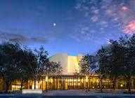

The Bing Concert Hall at Stanford will play a vital role in campus and in the local community. The hall’s exceptional acoustics and state-of-the-art technical capabilities will showcase the world’s finest performers.
The hall is scheduled to open early in 2013.
The concert hall will have 844 seats in an intimate vineyard-style configuration, with terraced sections wrapping all the way around the stage.